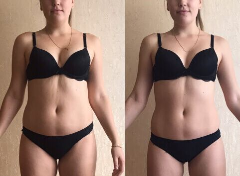
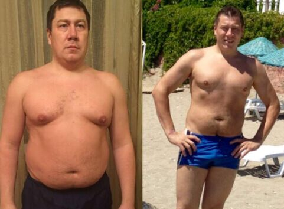
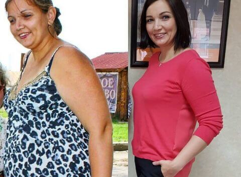
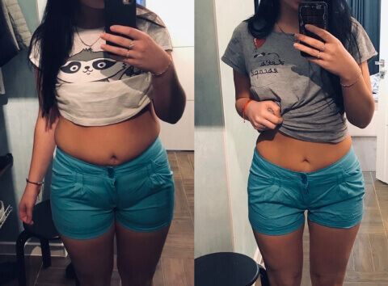

Marius Cosmescu 13 comentarii
La redacția noastră parvin multe scrisori din partea cititorilor. „Nu reușesc să slăbesc” - subiectul actual înainte de sezonul estival. Fără sfatul unui nutriționist nu veți face față!

„Acum un an am renunțat la zahăr și fast-food, merg la sală de 3 ori pe săptămână, zilnic fac alergări și exerciții pentru abdomen. Dar cu cât depun mai mult efort, cu atât mai puțin progresez. Timp de un an am slăbit doar 6 kg, deși îmi doresc să scap de 10-12 kg. Ce pot face?”
Corina, 32 de ani
„Am început să slăbesc de când mă știu. Mănânc puțin, muncesc fizic, după muncă fac volei și înot. Dar tot sunt grasă! În condițiile acestui stil de viață cântăresc 82 kg și nu reușesc să slăbesc deloc. Iar dacă mă relaxez și-mi permit o ciocolată sau omit antrenamentul, adaug pe loc 3-4 kg. Ajutor!”
Melania, 41 de ani„Deseori, la cabinetul meu se adresează persoane disperate, „care slăbesc toată viața”. Pentru șolduri zvelte și talie subțire sunt gata să consume luni întregi numai salată și mere, să transpire la sală, să renunțe la deserturile preferate... Cu toate acestea, nu slăbesc! Au încercat tot ce se putea și ori n-au obținut niciun rezultat, ori încep să se îngrașe din nou după o perioadă de relaxare”.
Marius Cosmescunutriționist, specialist în alimentație sănătoasă
Care este cauza? De vină este viteza scăzută a metabolismului. Persoanele predispuse la obezitate au un metabolism lent. Dietele nu fac decât să-l încetinească și mai mult. Prin urmare, dacă aveți exces de greutate, restricțiile alimentare o să vă dăuneze.
Dietele hipocalorice reprezintă un mare stres pentru organism. Corpul nostru simte că i-a fost declarată „greva foamei”, activează regimul de economisire, astfel încât începe să acumuleze grăsimea și mai rapid, chiar dacă aveți antrenamente regulate.
Și invers, cu cât corpul este mai relaxat, cu atât se desparte mai rapid de excesul de greutate. Dar este dificil să ajungi la această stare în mod natural. Pentru accelerarea metabolismului sunt necesare produse speciale.
Un exemplu potrivit poate fi viața călugărilor budiști care trăiesc în mănăstirile vechi din Laos. Aceștia își petrec întreaga zi în rugăciuni, trăiesc din pomana generoasă a credincioșilor, iar înainte de culcare au o cină copioasă.

Cu un astfel de stil de viață, având metabolismul încetinit, un european obișnuit ar fi ajuns să cântărească 100 kg. Dar călugării din Laos sunt zvelți și sănătoși până la adânci bătrânețe!
Colegii mei au început să studieze acest fenomen în anii 80. S-a dovedit că între rugăciuni și meditații, există un ritual obligatoriu pentru călugări: o ceașcă de . O băutură cu gust plăcut, preparată din pulberea obținută din frunze de ceai japonez. Călugării afirmă că aceasta îi ajută să-și mențină corpul în formă, să fie sănătoși, să nu se îngrașe.
este o sursă valoroasă de tiamină, teofilină, riboflavină, retinol și alte substanțe care accelerează metabolismul într-un mod natural. Cu acest ceai, persoanele care se îngrășau, îndată ce-și permiteau să consume o brioșă, încep să slăbească rapid, iar kilogramele nu mai revin la loc. Catechinele din compoziția ceaiului descompun celulele de grăsime (lipidele) care pătrund cu alimentele, împiedicându-le să se acumuleze pe șolduri și talie. Moleculele mari de grăsime sunt descompuse de catechine în trigliceride de dimensiune mai mică, care sunt eliminate insesizabil împreună cu urina, masele fecale și transpirația.
Studiile clinice au dovedit că, în afară de alte proprietăți,
restabilește funcțiile inimii și ale vaselor de sânge, precum și cele ale sistemului endocrin,
stimulează regenerarea țesuturilor, previne îmbătrânirea și lăsarea pielii (ptoza).
În țara noastră, este vândut cu denumirea brandului . Este îmbogățit cu taurină, carbohidratul care accelerează funcționarea intestinului și extract de acid citric, care elimină toxinele, sărurile și alte substanțe nocive din organism. Această băutură ajută să slăbești mai rapid decât tradițional. Din investigațiile mele, oamenii care au consumat zilnic timp de 3-4 săptămâni slăbesc până la 12-15 kg , chiar dacă anterior nu au obținut rezultate cu diete și antrenamente.
Așa arată clienții mei care au inclus în meniul său. Și-au dat acordul pentru a publica fotografiile:
 Ovidiu, 39 de ani.
Înainte - 104 kg, după - 89 kg
 Melissa, 27 de ani.
Melissa, 27 de ani.
Înainte - 92 kg, după - 74 kg.
 Delia, 32 de ani.
Înainte - 81 kg, după - 68 kg.
 Sabina, 24 de ani.
Înainte - 77 kg, după - 62 kg.
Acești oameni nu țin diete și practic nu fac sport, cel mult- gimnastică de dimineață. Însă datorită , și-au echilibrat metabolismul timp de o singură lună. Și problema excesului de greutate nu-i mai amenință.
Puteți cumpăra pe acest site . Acesta este furnizorul oficial al ceaiului din Asia. În cazul celorlalți vânzători nu vă pot oferi garanții, uneori, sub denumirea de brand se vinde ceai granulat obișnuit, vopsit. Doar comandând pe site-ul oficial sunteți sigur că este un produs original.


Elvira
Cunoaște cineva, pot să utilizez mai mult de o lună? În instrucțiuni scrie că un curs durează 30 de zile, dar eu am nevoie să slăbesc mai mult de 25 kg
Elena

Am început să beau, am continuat să mănânc tot ce-mi place și am slăbit 9 kg. Cred că nutriționistul are dreptate: nu e cazul să obosesc la sală, n-am nici timp nici dorință. Aceasta este soluția perfectă pentru cei ca mine! Recomand! Acesta este rezultatul meu
Mihai

Înainte de a începe să beau cântăream 90 kg. În tinerețe eram zvelt, dar odată cu vârsta mi-a apărut grăsime pe burtă și spate. M-am antrenat mult, dar oricum n-am putut reveni în formă. Apoi, la sfatul unui prieten am încercat acest produs și iată ce s-a întâmplat peste câteva luni!

Andra
Am călătorit în Laos și am văzut acest ceai. Dacă știam că e bun pentru slăbit, aș fi luat un sac cu mine!


Liana
Claudia , n-ai încercat să-ți controlezi meniul? Bagă în ei fără măsură și pe urmă nu știu cum să revină la o siluetă normală.
Paul
Liana , în calitate de medic, îți spun că există oameni cu predispoziție genetică spre supraponderabilitate, iar dietele obișnuite sunt ineficiente, au nevoie de produse speciale. Dacă nu ai predispoziție, ești o norocoasă, dar te asigur că nu toată lumea este la fel.